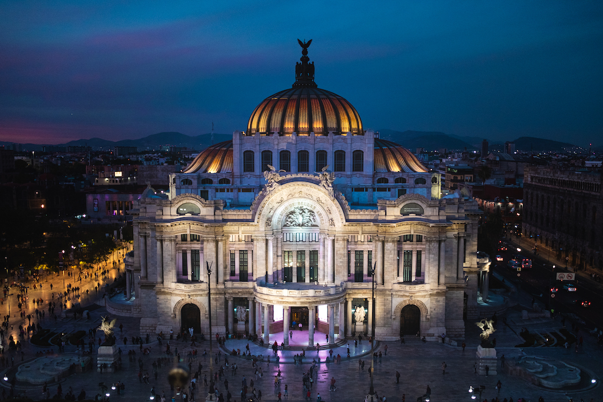
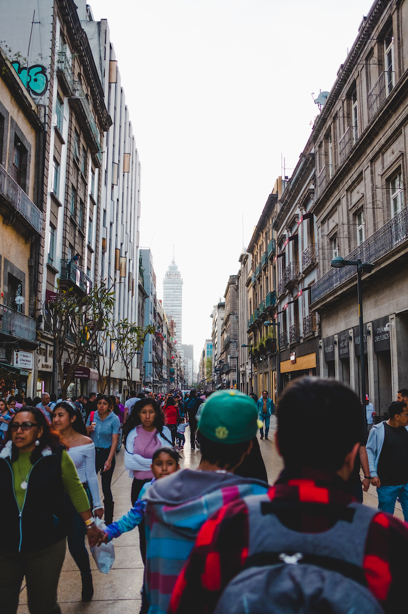
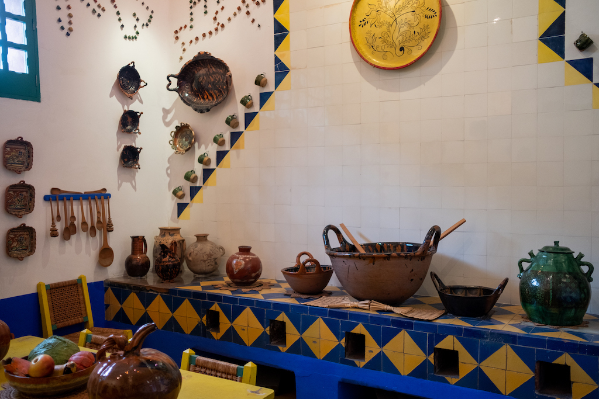
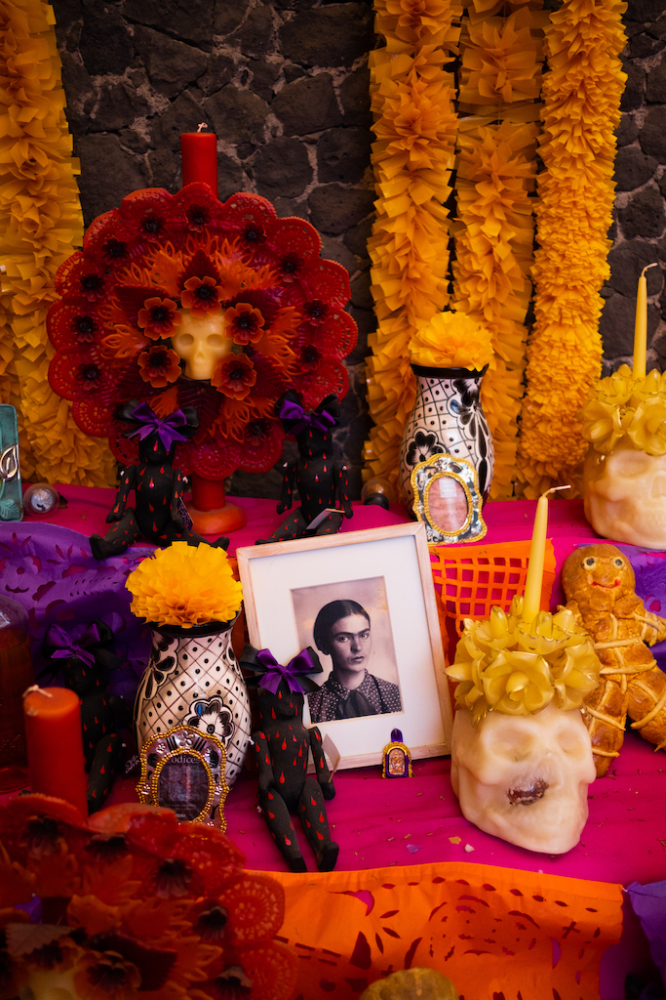
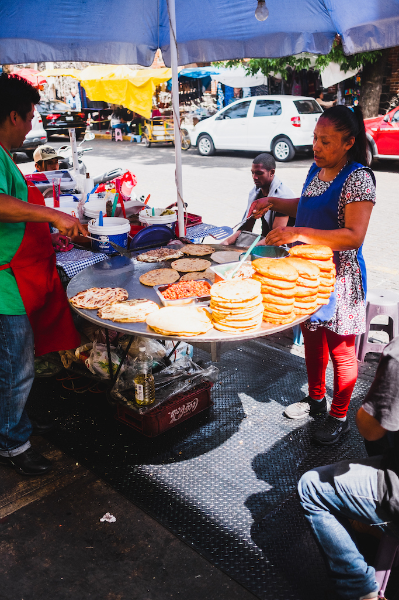
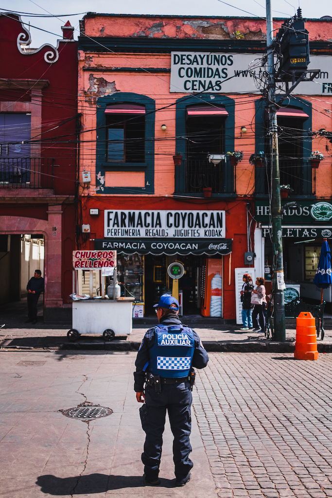
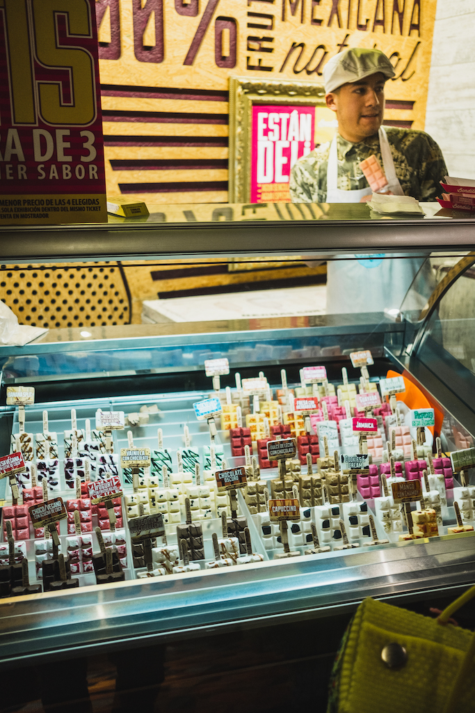

MEXICO CITY
FEBRUARY 2020
ZONA HISTORICA, COYOACAN, ROMA, CHAPULTEPEC
FUJIFILM X-T20 MIRRORLESS, 23mm f/2-16
















Designed by Bilal. Copyright © 2020, Bilal Ismail Ahmed. All rights reserved.